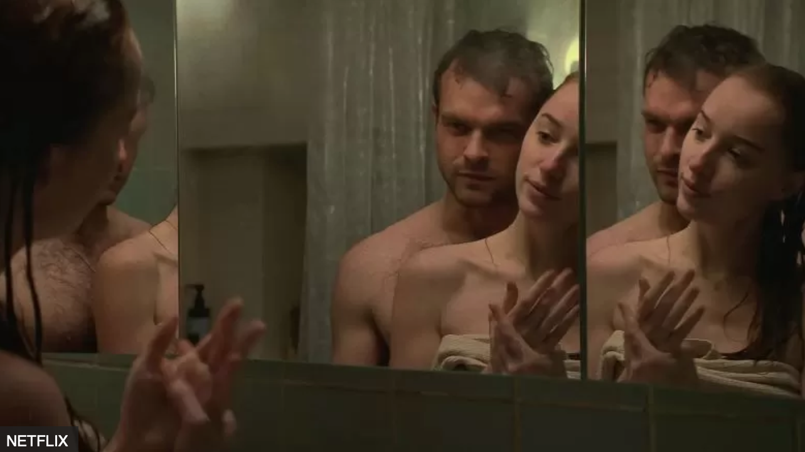
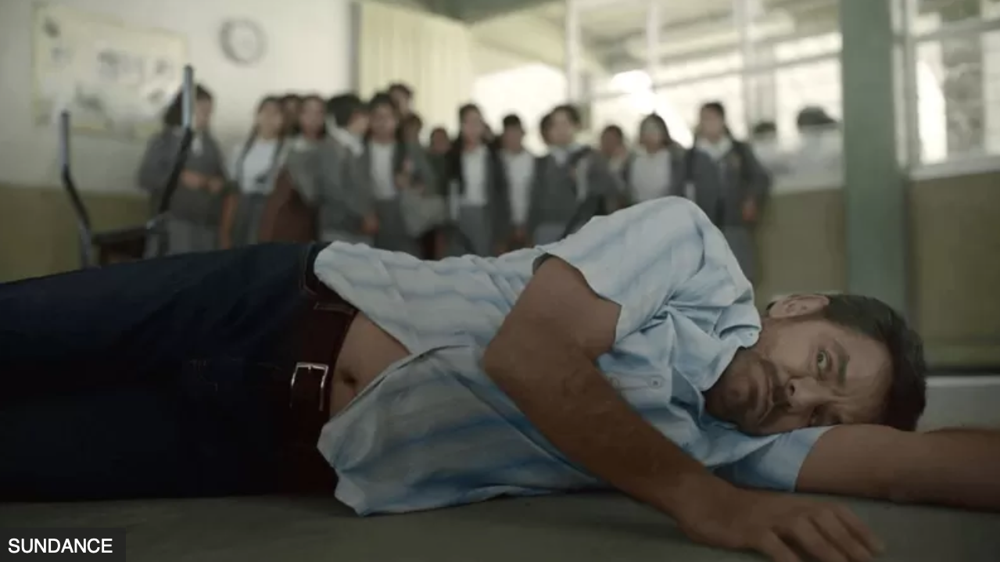
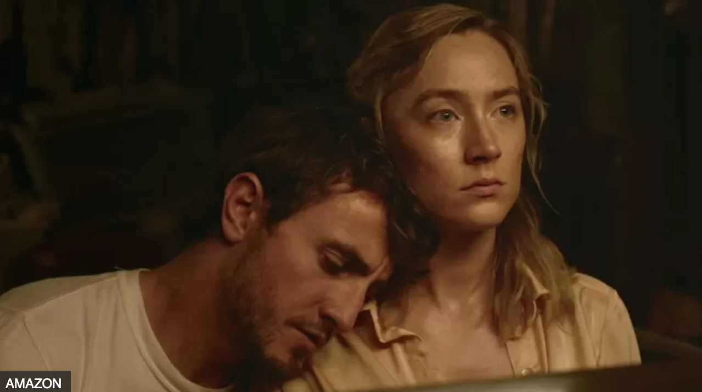
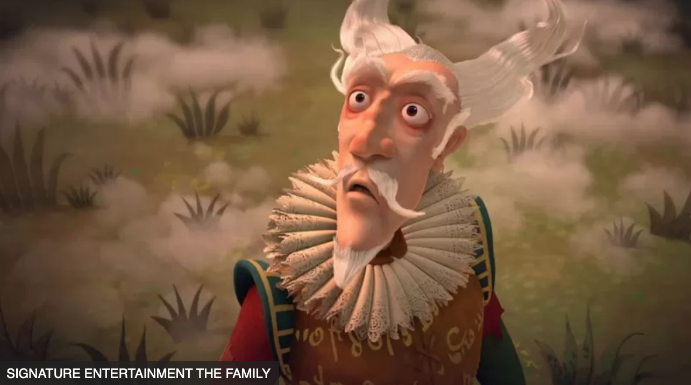
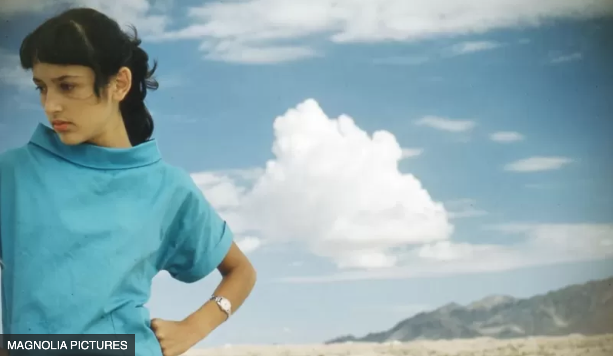
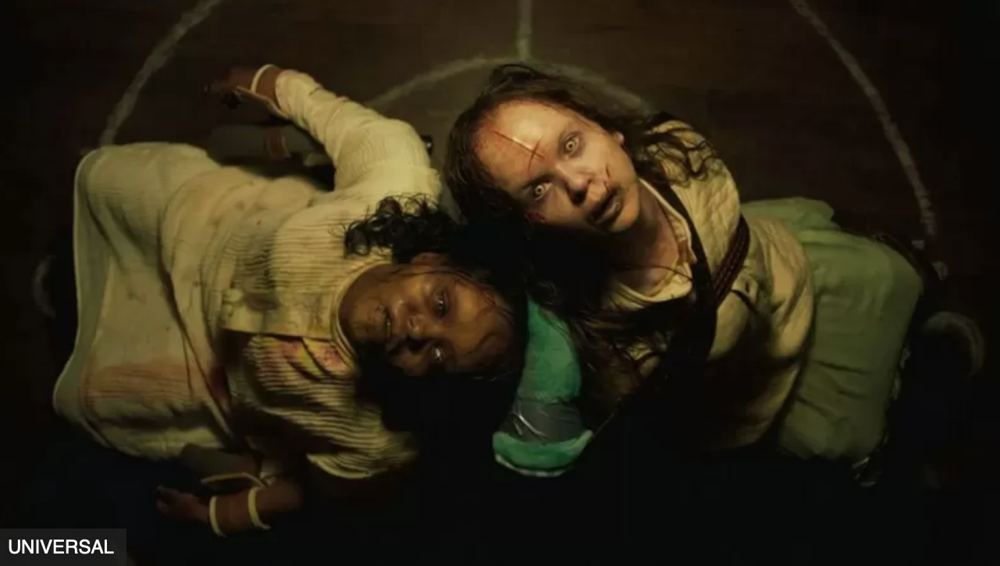

5 найкращих фільмів жовтня
"Радикальний" (Radical)
Еухеніо Дербес, який раніше вже грав натхненного вчителя музики у фільмі "Кода", повертається до цього образу у стрічці "Радикальний", заснованій на реальних подіях, у драмі режисера Крістофера Залли.
Цього разу Дербес грає Серхіо, якого запросили викладати у шостому класі у бідному мексиканському прикордонному містечку - головним чином тому, що ніхто інший не хотів іти на цю роботу.
Його учні звикли жити у злиднях і серед бандитів, але Серхіо заохочує їх іти за своїми мріями.
"Так, цей сюжет про професора, який надихає студентів, показували на екрані вже багато разів, - пише оглядач New York Post. - Але два чинники роблять фільм "Радикальний" відповідним своїй назві: історія вкорінена в унікальну культуру Мексики, а діти - усі виняткові актори, хоч і настільки юні... Залла дає урок, як зняти фільм, що бере за душу".
Фільм виходить на екрани з 20 жовтня
"Ворог" (Foe)
Двоє прекрасних молодих ірландських кіноакторів, Сірша Ронан і Пол Мескаль, зіграли головні ролі у фільмі "Ворог", науково-фантастичній драмі режисера Гарта Девіса за мотивами роману Ієна Ріда.
Вони грають Хен і Джуніора, пару, яка живе у віддаленому американському фермерському будинку через кілька десятиліть у майбутньому.
Земля вмирає, але таємничий незнайомець (Аарон П'єр) каже їм, що уряд розробляє план колонізації космосу. Джуніора вибрали для участі у цьому проєкті, але це означає, що він має залишити Хену на кілька років.
Vanity Fair називає фільм "камерною драмою, сповненою вибуховими емоціями... непередбачуваною, трагічною подорожжю із проблисками надії, яку захочеться переглянути ще раз".
Фільм виходить на екрани з 6 жовтня
"Кентервільський привид" (The Canterville Ghost)
АВТОР ФОТО, SIGNATURE ENTERTAINMENT THE FAMILY Стівен Фрай зіграв головну роль у "Вайлді", біографічному фільмі про Оскара Уайльда 1997 року, і він же отримав головну роль у "Кентервільському привиді", анімаційному фільмі, адаптованому за оповіданням Вайльда.
Дія фільму, у якому також звучить голос Г’ю Лорі, розгортається в Кентервіль Чейз, величному англійському будинку, який щойно придбала заможна родина зі США.
Місцевий привид, сер Саймон де Кентервіль, намагається відлякати цих зухвалих прибульців, але він боїться їх більше, ніж вони його.
"Кентервільський привид" - це "веселий і добродушний анімаційний фільм перед Гелловіном", пише The Guardian.
Анімаційний фільм виходить на екрани з 20 жовтня
"Джоан Баез: Я - шум" (Joan Baez: I Am a Noise)
Джоан Баез - фольк-співачка з приголомшливим голосом і непохитними переконаннями, вона стала зіркою ще підлітком. Незалежно від того, марширувала вона разом із Мартіном Лютером Кінгом-молодшим чи співала на сцені зі своїм тодішнім хлопцем Бобом Діланом, вона завжди виглядала на своєму місці.
Але цей інтимний документальний фільм, знятий під час прощального туру Баез у 2018 році, показує тривожність та депресію, які вирували під сталевою поверхнею.
За її словами, їй краще вдається ладнати з 2000 людьми в театрі, ніж з однією людиною в кімнаті.
"Близький, інтимний і відвертий опис кар’єри, яка тривала понад 60 років, - пише Deadline. - Цей складний документальний фільм вміло демонструє професійні та особисті аспекти дуже бурхливого життя... без сумніву, він вражає та захоплює".
Фільм виходить на екрани з 6 жовтня
5. "Екзорцист: Вірянин" (The Exorcist: Believer)
Нещодавні сиквели Девіда Гордона Ґріна про Гелловін вправно передали атмосферу оригінального фільму 1970-х років. Тепер він робить те саме з "Екзорцистом".
У класичному фільмі жахів демоном була одержима мала дівчинка Ріган. П’ятдесят років по тому, "Екзорцист: Вірянин" демонструє нам двох одержимих дівчат одночасно.
Їхні зневірені батьки шукають допомоги у матері Ріган, яку грає Еллен Берстін. Чи з'явиться у фільмі сама Ріган, яку грала Лінда Блер - загадка, яку творці фільму не розкривають, але відомо, що Блер була присутня на знімальному майданчику.
"Нам справді пощастило, що Лінда Блер була нашою консультанткою, - сказав Грін в інтерв'ю Empire, - вона розповіла нам не лише про те, як отримати чудову гру від юної акторки, а й про те, як створити середовище, у якому це можна зробити безпечно".
Фільм виходить на екрани з 6 жовтня